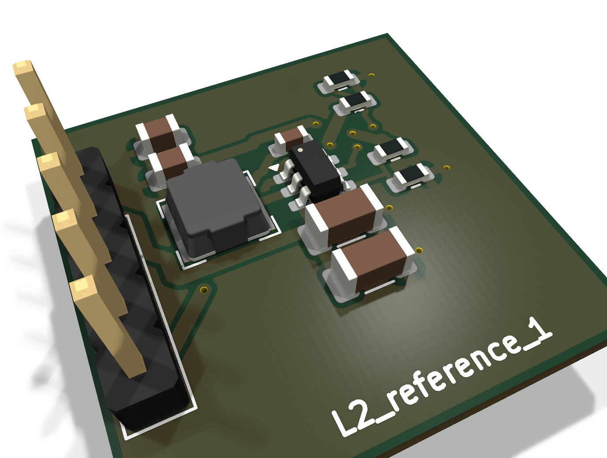

Predict before you build. Measure after. Publish the score.
Three parts that feed each other. Each one is narrow on purpose: one circuit type, one board format, one bench.
Real parts, not adjectives.
A model doesn't answer “22 µF”. It names an exact catalogue part — capacitance under DC bias, voltage rating, inductor saturation current — each tied to a datasheet page. Parts are recognised by what they connect to, not by their names, so renaming R8 to R1 changes nothing.
- ERROR
T2.ISAT— Isat 0.42 A < peak current 1.254 Abourns_srn2012t.pdf, p.1 - ERROR
T2.L_RANGE— L = 6.8 uH outside recommended 2.2-4.7 uHtps563201.pdf, Table 7-2 - WARN
T2.LOOP_IN— input cap loop 4.80 mm > 3 mm (VIN leg 2.15 mm, GND leg 4.80 mm)
Real checker output: the reference design with a deliberately undersized inductor swapped in.
The model proposes. The checks decide.
From the first real run, November 2026: DeepSeek designed the module from scratch. Its first answer broke one datasheet rule; the error went back verbatim, and the second answer passed.
- ERROR
T2.CIN_EFF— Cin(eff@8.4V) = 7.00 uF < min 10 uFone 10 µF / 25 V capacitor keeps only 7 µF at 8.4 V
- WARN
T2.LOOP_IN— input cap loop 9.11 mm > 3 mm (VIN leg 6.46 mm, GND leg 9.11 mm)
Predict, then commit.
Before manufacturing, the Oracle predicts output voltage, efficiency, ripple and temperature at nine operating points, each with an interval. The prediction is hashed and committed to git before the board is ordered, so it can't be adjusted afterwards.
Version 0 is datasheet physics. What's new is the public score against real measurements, and learning from every miss.
Measure, then score.
Every module has the same 22 × 22 mm outline and the same connector, so any design drops into one fixture. The next revision adds separate sense contacts, so connector resistance stays out of the voltage reading. The bench returns measurements in exactly the Oracle's format.

The reference module, generated end-to-end by the harness. DRC 0 errors, ERC 0 errors.